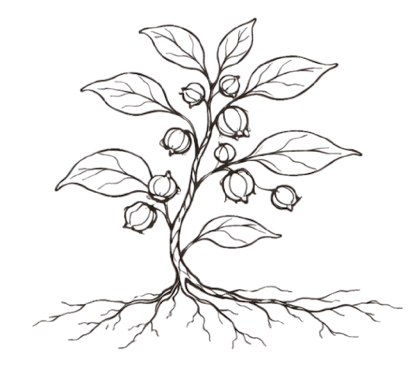

ליווי אישי וטיפול
מפגשי קליניקה לבניית תהליך טיפולי מדורג, עם פורמולה מותאמת והמשך מעקב.
לתיאום
אורן עמנואל שושנה הרבליסט קליניקליניקה שקטה לצמחי מרפא
ליווי קליני המבוסס על שיחה, אבחון, פורמולות צמחים ותשומת לב למקצב החיים. מקום להאט, להקשיב לגוף, ולבנות דרך טיפולית שניתן לחיות איתה.
מה קורה בקליניקה
העבודה הקלינית מתמקדת באדם השלם: מערכת העיכול, שינה, עומס, חוסן רגשי, מחזוריות, נשימה והרגלי חיים. לכל תהליך נבנית פורמולה אישית, לצד המלצות מעשיות שמכבדות את היומיום.
הצמחים נבחרים בזהירות לפי תמונת המצב, תרופות קיימות, רגישויות ומטרות הטיפול. אין כאן קסמים מהירים, אלא תהליך יציב, טבעי ומבוסס.
הסיפור שלי
אני חי ופועל בקדיתא שבהרי הגליל, מתוך חיבור יומיומי לאדמה, לעונות ולצומח המקומי. עם השנים גדלה בי הסקרנות להכיר כל עשב, שיח ועץ בשם, במראה, בריח ובשימושים הקולינריים והרפואיים שלו.
הדרך המקצועית שלי משלבת הרבליזם קליני, רוקחות טבעית, ליקוט, גינון, בוסתנאות ארץ ישראלית והנחיית סדנאות. למדתי הרבליזם קליני בקמפוס ברושים, עבדתי עם צמחי מרפא מקומיים ומדבריים, ואני ממשיך ללמוד דרך המפגש הישיר עם הצמח, המקום והאדם.
הליקוט בשבילי הוא לא רק איסוף חומרי גלם. זו דרך להאט, להתבונן, לדעת מאיפה מגיעה הרפואה, ולזכור שהקשר בין אדם לאדמה הוא חלק מהטיפול עצמו.
מי שסקרן ללמוד זיהוי צמחים, ליקוט ועבודה בשטח מוזמן ליצור קשר לגבי ימי ליקוט משותפים כעוזר.
לשאול על יום ליקוטלכל צמח יש אופי, טמפרטורה, תנועה וסיפור. הבחירה המדויקת שלהם יחד היא לב העבודה ההרבליסטית.
אפשר להתחיל כאן
יצירת קשר
לתיאום מפגש, בירור לגבי מוצר או הזמנת סדנה, אפשר להשאיר פרטים ואחזור בהקדם.